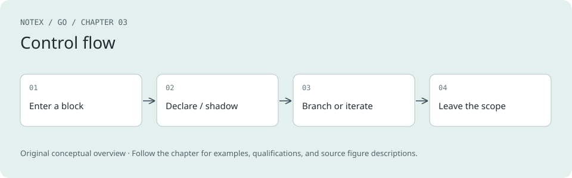

Chapter 3. Blocks, Shadows, and Control Structures
A Note for Early Release Readers
With Early Release ebooks, you get books in their earliest form—the author’s raw and unedited content as they write—so you can take advantage of these technologies long before the official release of these titles.
This will be the fourth chapter of the final book. Please note that the GitHub repo will be made active later on.
If you’d like to be actively involved in reviewing and commenting on this draft, please reach out to the editor at sgrey@oreilly.com.
Now that I have covered variables, constants, and built-in types, you are ready to look at programming logic and organization. I’ll start by explaining blocks and how they control when an identifier is available. Then I’ll present Go’s control structures: if, for, and switch. Finally, I will talk about goto and the one situation when you should use it.
Blocks
Go lets you declare variables in lots of places. You can declare them outside of functions, as the parameters to functions, and as local variables within functions.
Note
So far, you’ve written only the main function, but you’ll write functions with parameters in the next chapter.
Each place where a declaration occurs is called a block. Variables, constants, types, and functions declared outside of any functions are placed in the package block. You’ve used import statements in your programs to gain access to printing and math functions (and I will talk about them in detail in Chapter 10). They define names for other packages that are valid for the file that contains the import statement. These names are in the file block. All the variables defined at the top level of a function (including the parameters to that function) are in a block. Within a function, every set of braces ({}) defines another block, and in a bit you will see that the control structures in Go define blocks of their own.
You can access an identifier defined in any outer block from within any inner block. This raises the question: what happens when you have a declaration with the same name as an identifier in a containing block? If you do that, you shadow the identifier created in the outer block.
Shadowing Variables
Before I explain what shadowing is, let’s take a look at some code (see Example 3-1). You can run it on The Go Playground or in the sample_code/shadow_variables directory in the Chapter 4 repository.
Example 3-1. Shadowing variables
func main() {
x := 10
if x > 5 {
fmt.Println(x)
x := 5
fmt.Println(x)
}
fmt.Println(x)
}
Before you run this code, try to guess what it’s going to print out:
-
Nothing prints; the code does not compile
-
10 on line one, 5 on line two, 5 on line three
-
10 on line one, 5 on line two, 10 on line three
Here’s what happens:
10
5
10
A shadowing variable is a variable that has the same name as a variable in a containing block. For as long as the shadowing variable exists, you cannot access a shadowed variable.
In this case, you almost certainly didn’t want to create a brand-new x inside the if statement. Instead, you probably wanted to assign 5 to the x declared at the top level of the function block. At the first fmt.Println inside the if statement, you can access the x declared at the top level of the function. On the next line, though, you shadow x by declaring a new variable with the same name inside the block created by the if statement’s body. At the second fmt.Println, when you access the variable named x, you get the shadowing variable, which has the value of 5. The closing brace for the if statement’s body ends the block where the shadowing x exists, and at the third fmt.Println, when you access the variable named x, you get the variable declared at the top level of the function, which has the value of 10. Notice that this x didn’t disappear or get reassigned; there was just no way to access it once it was shadowed in the inner block.
I mentioned in the previous chapter that in some situations I avoid using := because it can make it unclear what variables are being used. That’s because it is very easy to accidentally shadow a variable when using :=. Remember, you can use := to create and assign to multiple variables at once. Also, not all variables on the lefthand side have to be new for := to be legal. You can use := as long as there is at least one new variable on the lefthand side. Let’s look at another program (see Example 3-2), which you can find on The Go Playground or in the sample_code/shadow_multiple_assignment directory in the Chapter 4 repository.
Example 3-2. Shadowing with multiple assignment
func main() {
x := 10
if x > 5 {
x, y := 5, 20
fmt.Println(x, y)
}
fmt.Println(x)
}
Running this code gives you the following:
5 20
10
Although there was an existing definition of x in an outer block, x was still shadowed within the if statement. That’s because := reuses only variables that are declared in the current block. When using :=, make sure that you don’t have any variables from an outer scope on the lefthand side unless you intend to shadow them.
You also need to be careful to ensure that you don’t shadow a package import. I’ll talk more about importing packages in Chapter 10, but you’ve been importing the fmt package to print out the results of your programs. Let’s see what happens when you declare a variable called fmt within your main function, as shown in Example 3-3. You can try to run it on The Go Playground or in the sample_code/shadow_package_names directory in the Chapter 4 repository.
Example 3-3. Shadowing package names
func main() {
x := 10
fmt.Println(x)
fmt := "oops"
fmt.Println(fmt)
}
When you try to run this code, you get an error:
fmt.Println undefined (type string has no field or method Println)
Notice that the problem isn’t that you named your variable fmt; it’s that you tried to access something that the local variable fmt didn’t have. Once the local variable fmt is declared, it shadows the package named fmt in the file block, making it impossible to use the fmt package for the rest of the main function.
The Universe Block
One more block is a little weird: the universe block. Remember, Go is a small language with only 25 keywords. What’s interesting is that the built-in types (like int and string), constants (like true and false), and functions (like make or close) aren’t included in that list. Neither is nil. So, where are they?
Rather than make them keywords, Go considers these predeclared identifiers and defines them in the universe block, which is the block that contains all other blocks.
Because these names are declared in the universe block, they can be shadowed in other scopes. You can see this happen by running the code in Example 3-4 on The Go Playground or in the sample_code/shadow_true directory in the Chapter 4 repository.
Example 3-4. Shadowing true
fmt.Println(true)
true := 10
fmt.Println(true)
When you run it, you’ll see:
true
10
You must be very careful to never redefine any identifiers in the universe block. If you accidentally do so, you will get some strange behavior. If you’re lucky, you’ll get compilation failures; if not, you’ll have a harder time tracking down the source of your problems.
The ability to shadow identifiers in the universe block has one advantage: It allows Go to add new predeclared identifiers without breaking existing code. Go 1.21 added three new functions to the universe block: clear, min, and max. If you wrote code with Go 1.20 or earlier that used those names for variable or functions, it would violate the Go compatibility guarantee for the code to not compile under Go 1.21 or later. Shadowing the universe block identifiers allows old code to continue working.
Since shadowing is useful in a few instances (later chapters will point them out), go vet does not report it as a likely error. In Chapter 11, you’ll learn about third-party tools that can detect accidental shadowing in your code.
if
The if statement in Go is much like the if statement in most programming languages. Because it is such a familiar construct, I’ve used it in previous sample code without worrying that it’d be confusing. Example 3-5 shows a more complete sample.
Example 3-5. if and else
n := rand.IntN(10)
if n == 0 {
fmt.Println("That's too low")
} else if n > 5 {
fmt.Println("That's too big:", n)
} else {
fmt.Println("That's a good number:", n)
}
The most visible difference between if statements in Go and other languages is that you don’t put parentheses around the condition. But Go adds another feature to if statements that helps you better manage your variables.
As I discussed in “Shadowing Variables”, any variable declared within the braces of an if or else statement exists only within that block. This isn’t that uncommon; it is true in most languages. What Go adds is the ability to declare variables that are scoped to the condition and to both the if and else blocks. Take a look at Example 3-6, which rewrites our previous example to use this scope.
Example 3-6. Scoping a variable to an if statement
if n := rand.IntN(10); n == 0 {
fmt.Println("That's too low")
} else if n > 5 {
fmt.Println("That's too big:", n)
} else {
fmt.Println("That's a good number:", n)
}
Having this special scope is handy. It lets you create variables that are available only where they are needed. Once the series of if/else statements ends, n is undefined. You can test this by trying to run the code in Example 3-7 on The Go Playground or in the sample_code/if_bad_scope directory in the Chapter 4 repository.
Example 3-7. Out of scope…
if n := rand.IntN(10); n == 0 {
fmt.Println("That's too low")
} else if n > 5 {
fmt.Println("That's too big:", n)
} else {
fmt.Println("That's a good number:", n)
}
fmt.Println(n)
Attempting to run this code produces a compilation error:
undefined: n
Note
Technically, you can put any simple statement before the comparison in an if statement—including a function call that doesn’t return a value or an assignment of a new value to an existing variable. But don’t do this. Use this feature only to define new variables that are scoped to the if/else statements; anything else would be confusing.
Also be aware that, just like any other block, a variable declared as part of an if statement will shadow variables with the same name that are declared in containing blocks.
Code Review: Blocks, shadowing, and if statements
-
Watch for accidental shadowing when using
:=in inner scopes. -
Do not give a local variable the same name as an imported package; this makes the package unreachable for the remainder of the enclosing block.
-
Never redefine an identifier from the universe block. The compiler may not catch it, and the resulting bugs are subtle.
-
If the variable being tested in the condition of an if statement is only useful within the if and else blocks, assign its value in the initialization section of the if statement so it is scoped to just the if and else blocks.
Exercises
The following exercises let you try out code with blocks and if statements. Solutions are in the exercise_solutions directory in the Chapter 4 repository.
-
Create a game where the computer picks a number and then tries to guess it. Define a variable named luckyNumber and set it to rand.IntN(10)+1. Define a second variable myGuess and also set it to rand.IntN(10)+1. Write a series of if statements that print out if myGuess is equal to, less than, or greater than luckyNumber.
-
Rewrite the following code so err is scoped to only the if/else chain and is not accessible after it:
go
err := doSomething()
if err != nil { fmt.Println("failed:", err) } else { fmt.Println("ok") }
- Declare a local variable named len and write code that uses both the predeclared identifier and the shadow. Explain what happens if you call len("hi") after the shadow.
for, Four Ways
As in other languages in the C family, Go uses a for statement to loop. What makes Go different from other languages is that for is the only looping keyword in the language. Go accomplishes this by using the for keyword in four formats:
-
A complete, C-style for
-
A condition-only for
-
An infinite for
-
for-range
The Complete for Statement
The first for loop style is the complete for declaration you might be familiar with from C, Java, or JavaScript, as shown in Example 3-8.
Example 3-8. A complete for statement
for i := 0; i < 10; i++ {
fmt.Println(i)
}
You might be unsurprised to find that this program prints out the numbers from 0 to 9, inclusive.
Just like the if statement, the for statement does not use parentheses around its parts. Otherwise, it should look familiar. The for statement has three parts, separated by semicolons. The first part is an initialization that sets one or more variables before the loop begins. You should remember two important details about the initialization section: First, you must use := to initialize the variables; var is not legal here. Second, just as with variable declarations in if statements, you can shadow a variable here.
Next comes the comparison. This must be an expression that evaluates to a bool. It is checked immediately before each iteration of the loop. If the expression evaluates to true, the loop body is executed.
The last part of a standard for statement is the increment. You usually see something like i{plus}{plus} here, but any assignment is valid. It runs immediately after each iteration of the loop, before the condition is evaluated.
Go allows you to leave out one or more of the three parts of the for statement. Most commonly, you’ll leave off the initialization if it is based on a value calculated before the loop:
i := 0
for ; i < 10; i++ {
fmt.Println(i)
}
It’s also common to leave off the increment, often because you have a more complicated increment rule inside the loop:
for i := 0; i < 10; {
fmt.Println(i)
if i % 2 == 0 {
i++
} else {
i+=2
}
}
The Condition-Only for Statement
When you leave off both the initialization and the increment in a for statement, do not include the semicolons. (If you do, go fmt will remove them.) That leaves a for statement that functions like the while statements found in C, Java, JavaScript, Python, Ruby, and many other languages. It looks like Example 3-9.
Example 3-9. A condition-only for statement
i := 1
for i < 100 {
fmt.Println(i)
i = i * 2
}
The Infinite for Statement
The third for statement format does away with the condition, too. Go has a version of a for loop that loops forever. If you learned to program in the 1980s, your first program was probably an infinite loop in BASIC that printed HELLO to the screen forever:
10 PRINT "HELLO"
20 GOTO 10
Example 3-10 shows the Go version of this program. You can run it locally or try it out on The Go Playground or in the sample_code/infinite_for directory in the Chapter 4 repository.
Example 3-10. Infinite looping nostalgia
package main
import "fmt"
func main() {
for {
fmt.Println("Hello")
}
}
Running this program gives you the same output that filled the screens of millions of Commodore 64s and Apple IIcs:
Hello
Hello
Hello
Hello
Hello
Hello
Hello
...
Press Ctrl-C when you are tired of walking down memory lane.
Note
If you run Example 3-10 on The Go Playground, you’ll find that it will stop execution after a few seconds. As a shared resource, the playground doesn’t allow any one program to run for too long.
break and continue
How do you get out of an infinite for loop without using the keyboard or turning off your computer? That’s the job of the break statement. It exits the loop immediately, just like the break statement in other languages. Of course, you can use break with any for statement, not just the infinite for statement.
Note
Go has no equivalent of the do keyword in Java, C, and JavaScript. If you want to iterate at least once, the cleanest way is to use an infinite for lo say you have some Java code that uses a do/while loop:
do {
// things to do in the loop
} while (CONDITION);
The Go version looks like this:
for {
// things to do in the loop
if !CONDITION {
break
}
}
Note that the condition has a leading ! to negate the condition from the Java code. The Go code is specifying how to exit the loop, while the Java code specifies how to stay in it.
Go also includes the continue keyword, which skips over the rest of the for loop’s body and proceeds directly to the next iteration. Technically, you don’t need a+continue+ statement. You could write code like Example 3-11.
Example 3-11. Confusing code
for i := 1; i <= 100; i++ {
if i%3 == 0 {
if i%5 == 0 {
fmt.Println("FizzBuzz")
} else {
fmt.Println("Fizz")
}
} else if i%5 == 0 {
fmt.Println("Buzz")
} else {
fmt.Println(i)
}
}
But this is not idiomatic. Go encourages short if statement bodies, as left-aligned as possible. Nested code can be difficult to follow. Using a continue statement makes it easier to understand what’s going on. Example 3-12 shows the code from the previous example, rewritten to use continue instead.
Example 3-12. Using continue to make code clearer
for i := 1; i <= 100; i++ {
if i%3 == 0 && i%5 == 0 {
fmt.Println("FizzBuzz")
continue
}
if i%3 == 0 {
fmt.Println("Fizz")
continue
}
if i%5 == 0 {
fmt.Println("Buzz")
continue
}
fmt.Println(i)
}
As you can see, replacing chains of if/else statements with a series of if statements that use continue makes the conditions line up. This improves the layout of your conditions, which means your code is easier to read and understand.
The versatile for-range Statement
The fourth for statement format is called a for-range loop and resembles the iterators found in other languages. It is for iterating over elements in some of Go’s built-in types. This section shows how to use a for-range loop with integers, strings, arrays, slices, maps, and functions. When I cover channels in Chapter 12>, I will talk about how to use them with for-range loops.
Note
Use a for-range loop to iterate over the built-in compound types and user-defined types that are based on them.
The simplest for-range loop is the integer loop. The code in Example 3-13 functions identically to Example 3-8, assigning 0 to 9, inclusive, to i:
Example 3-13. An integer for-range loop
for i := range 10 {
fmt.Println(i)
}
There are a few details to note about ranging over integers. If the range limit is less than or equal to zero, the loop is skipped. Also, if the counter is not used inside the for loop, do not include it:
for range 10 {
fmt.Println("printing this message 10 times")
}
Note
Why does Go have a shortcut for looping through integers? In 2023, Russ Cox, the former tech lead for Go, noted that “In the Go code I have examined from the main repo, approximately half of existing 3-clause for loops can be converted to range over integer.” Since this was such a frequent pattern, Go 1.22 added a simple way to express it.
Next, let’s take a look at using a for-range loop with a slice. You can try out the code in Example 3-14 on The Go Playground or in the forRangeKeyValue function in main.go in the sample_code/for_range directory in the Chapter 4 repository.
Example 3-14. Using for-range to loop over a slice
evenVals := []int{2, 4, 6, 8, 10, 12}
for i, v := range evenVals {
fmt.Println(i, v)
}
Running this code produces the following output:
0 2
1 4
2 6
3 8
4 10
5 12
Iterating over a map is similar to iterating over a slice:
ages := map[string]int{"Moses": 120, "David": 70, "Abraham": 175}
for k, v := range ages {
fmt.Println(k, v)
}
What makes a for-range loop for slices or maps interesting is that you get two loop variables. The first variable is the position in the data structure being iterated, while the second is the value at that position. The idiomatic names for the two loop variables depend on what is being looped over. When looping over an array, slice, or string, an i for index is commonly used. When iterating through a map, k (for key) is used instead.
The second variable is frequently called v for value, but is sometimes named based on the type of the values being iterated. Of course, you can give the variables any names that you like. If the body of the loop contains only a few statements, single-letter variable names work well. For longer (or nested) loops, you’ll want to use more descriptive names.
What if you don’t use the first variable within your for-range loop? Remember, Go requires you to access all declared variables, and this rule applies to the ones declared as part of a for loop too. If you don’t access the key, use an underscore (_) as the variable’s name. This tells Go to ignore the first variable.
Let’s rewrite the slice ranging code so it doesn’t print out the position. You can run the code in Example 3-15 on The Go Playground or in the forRangeIgnoreKey function in main.go in the sample_code/for_range directory in the Chapter 4 repository.
Example 3-15. Ignoring the slice index in a for-range loop
evenVals := []int{2, 4, 6, 8, 10, 12}
for _, v := range evenVals {
fmt.Println(v)
}
Running this code produces the following output:
2
4
6
8
10
12
Tip
Anytime you are in a situation where a value is returned, but you want to ignore it, use an underscore to hide the value. You’ll see the underscore pattern again when I talk about functions in Chapter 4 and packages in Chapter 10.
What if you want the key but don’t want the value? In this situation, Go allows you to just leave off the second variable. This is valid Go code:
uniqueNames := map[string]bool{"Fred": true, "Raul": true, "Wilma": true}
for k := range uniqueNames {
fmt.Println(k)
}
The most common reason for iterating over the key is when a map is being used as a set. In those situations, the value is unimportant. However, you can also leave off the value when iterating over arrays or slices. This is rare, as the usual reason for iterating over a linear data structure is to access the data. If you find yourself using this format for an array or slice, there’s an excellent chance that you have chosen the wrong data structure and should consider refactoring.
Note
When you look at channels in Chapter 12, you’ll see a situation where a for-range loop returns only a single value each time the loop iterates.
Map iteration order
There’s something interesting about how a for-range loop iterates over a map. You can run the code in Example 3-16 on The Go Playground or in the sample_code/iterate_map directory in the Chapter 4 repository.
Example 3-16. Map iteration order varies
m := map[string]int{
"a": 1,
"c": 3,
"b": 2,
}
for i := range 3 {
fmt.Println("Loop", i)
for k, v := range m {
fmt.Println(k, v)
}
}
When you build and run this program, the output varies. Here is one possibility:
Loop 0
c 3
b 2
a 1
Loop 1
a 1
c 3
b 2
Loop 2
b 2
a 1
c 3
The order of the keys and values varies; some runs may be identical. This is actually a security feature. In earlier Go versions, the iteration order for keys in a map was usually (but not always) the same if you inserted the same items into a map. This caused two problems:
-
People would write code that assumed that the order was fixed, and this code would break at weird times.
-
If maps always hash items to the exact same values and you know that a server is storing user data in a map, you can slow down that server with an attack called a Hash DoS by sending it specially crafted data with keys that all hash to the same bucket.
To prevent both of these problems, the Go team made two changes to the map implementation. First, they modified the hash algorithm for maps to include a random number that’s generated every time a map variable is created. Next, they made the order of a for-range iteration over a map vary a bit each time the map is looped over. These two changes make it far harder to implement a Hash DoS attack.
Note
This rule has one exception. To make it easier to debug and log maps, the formatting functions (like
fmt.Println) always output maps with their keys in ascending sorted order.
The for-range value is a copy
You should be aware that each time a for-range loop iterates over a compound type, it copies the value from the compound type to the value variable. Modifying the value variable will not modify the value in the compound type. Example 3-17 shows a quick program to demonstrate this. You can try it out on The Go Playground or in the forRangeIsACopy function in main.go in the sample_code/for_range directory in the Chapter 4 repository.
Example 3-17. Modifying the value doesn’t modify the source
evenVals := []int{2, 4, 6, 8, 10, 12}
for _, v := range evenVals {
v *= 2
}
fmt.Println(evenVals)
Running this code gives the following output:
[2 4 6 8 10 12]
Iterating over strings
As I mentioned earlier, you can also use a string with a for-range loop. Let’s take a look. You can run the code in Example 3-18 on your computer or on The Go Playground or in the sample_code/iterate_string directory in the Chapter 4 repository.
Example 3-18. Iterating over strings
samples := []string{"hello", "apple_π!"}
for _, sample := range samples {
for i, r := range sample {
fmt.Println(i, r, string(r))
}
fmt.Println()
}
The output when the code iterates over the word “hello” has no surprises:
0 104 h
1 101 e
2 108 l
3 108 l
4 111 o
In the first column is the index; in the second, the numeric value of the letter; and in the third is the numeric value of the letter type converted to a string.
Looking at the result for “apple_π!” is more interesting:
0 97 a
1 112 p
2 112 p
3 108 l
4 101 e
5 95 _
6 960 π
8 33 !
Two things to notice about this output: First, the first column skips the number 7. Second, the value at position 6 is 960. That’s far larger than what can fit in a byte. But in Chapter 2, you saw that strings were made out of bytes. What’s going on?
What you are seeing is special behavior from iterating over a string with a for-range loop. It iterates over the runes, not the bytes. Whenever a for-range loop encounters a multibyte rune in a string, it converts the UTF-8 representation into a single 32-bit number and assigns it to the value. The offset is incremented by the number of bytes in the rune. If the for-range loop encounters a byte that doesn’t represent a valid UTF-8 value, the Unicode replacement character (hex value 0xfffd) is returned instead.
Tip
Use a for-range loop to access the runes in a string in order. The first variable holds the number of bytes from the beginning of the string, but the type of the second variable is rune.
Iterating over functions
The for-range style is so convenient that developers wanted to use it to iterate over anything. Go 1.23 addressed this by enhancing the for-range loop to support iterating over functions. The function provides values and indicates when iteration should stop.
Rather that constructing iterator functions directly, the idiomatic pattern is for a builder function to take in a value and return an iterator functions for that value. If you aren’t familiar with functions that return functions, I talk about them in “Returning Functions from Functions”. Creating your own iterator builder functions is detailed in Chapter 8 (you have to learn about closures and generics first), but the standard library includes several iterator builder functions for common use cases.
Passing a slice to the slices.Values function returns a function that provides the values in a slice without the index:
mySuperBestFriends := []string{"Wendy", "Marvin", "Aquaman"}
for v := range slices.Values(mySuperBestFriends) {
fmt.Println(v, "is one of my best friends!")
}
There’s also slices.Backward for iterating through a slice in reverse order:
for i, v := range slices.Backward(mySuperBestFriends) {
fmt.Println("number", i, "friend is", v)
}
Another interesting function is slices.Chunk, which returns a function that creates subslices out of a parent slice:
valsToPair := []int{1,2,2,4,3,6,4,8,5,10}
pairs := map[int]int{}
for sub := range slices.Chunk(valsToPair, 2) {
pairs[sub[0]] = sub[1]
}
The maps.Keys function returns a function that provides the keys of a map, while maps.Values does the same for map values:
for k := range maps.Keys(pairs) {
fmt.Println(k)
}
for v := range maps.Values(pairs) {
fmt.Println(v)
}
The strings package includes several functions for iterating through parts of a string. They include strings.Lines (which returns newline-delimited substrings), strings.FieldsSeq (for splitting on one or more whitespace characters), and strings.SplitSeq (for splitting on a provided separator). You can try out all of these iterator examples on The Go Playground or find them in the Chapter 4 repository in the sample_code/iter directory.
Tip
The bytes package provides string iterator analogues that work with byte slices.
Labeling Your for Statements
By default, the break and continue keywords apply to the for loop that directly contains them. What if you have nested for loops and want to exit or skip over an iterator of an outer loop? Let’s look at an example.
You’re going to modify the earlier string-iterating program to stop iterating through a string as soon as it hits a letter “l.” You can run the code in Example 3-19 on The Go Playground or in the sample_code/for_label directory in the Chapter 4 repository.
Example 3-19. Labels
func main() {
samples := []string{"hello", "apple_π!"}
outer:
for _, sample := range samples {
for i, r := range sample {
fmt.Println(i, r, string(r))
if r == 'l' {
continue outer
}
}
fmt.Println()
}
}
Notice that go fmt indents the label outer to the same level as the surrounding function. Labels are always indented to the same level as the braces for the block. This makes them easier to notice. Running the program gives the following output:
0 104 h
1 101 e
2 108 l
0 97 a
1 112 p
2 112 p
3 108 l
Nested for loops with labels are rare. They are most commonly used to implement algorithms similar to the following pseudocode:
outer:
for _, outerVal := range outerValues {
for _, innerVal := range outerVal {
// process innerVal
if invalidSituation(innerVal) {
continue outer
}
}
// here we have code that runs only when all of the
// innerVal values have been successfully processed
}
Choosing the Right for Statement
Now that I’ve covered all forms of the for statement, you might be wondering when to use which format. Most of the time, you should use the for-range format. A for-range loop is the best way to iterate up to an integer. It’s also the best way to walk through a string, since it properly gives you back runes instead of bytes. You have also seen that a for-range loop works well for iterating through slices and maps. Functional iterators make map and slice iteration more flexible and extend the idiom to user-defined types. You’ll see in Chapter 12 that channels work naturally with for-range as well.
Tip
Favor the for-range loop. For common cases, it avoids a great deal of the boilerplate code required for the other for loop styles.
When should you use the complete for loop? It’s most useful when there’s a nontrivial increment or test. While you might be able to use some combination of if, continue, and break within a for-range loop, a standard for loop’s test and increment clauses provide a clear way to indicate when iteration ends and how many elements are being skipped. For example, here’s code that counts the number of runes in a slice of bytes:
b := []byte{0xf0, 0x9f, 0x91, 0x8b, 0x2c, 0x20, 0xf0, 0x9f, 0x8c, 0x8e, 0x21}
count := 0
width := 0
for i := 0; i < len(b); i += width {
_, width = utf8.DecodeRune(b[i:])
count++
}
fmt.Println(count)
The size of the increment depends on the value of the data, which cannot work with a simple for-range loop over a slice.
The condition-only for loop is, like the while loop it replaces, useful when you are looping based on a calculated value.
The infinite for loop is useful in some situations, but you need to use it carefully. The body of the for loop should always contain a break or return, because you’ll rarely want to loop forever. Real-world programs should bound iteration and fail gracefully when they can’t complete operations. As you’ve seen, an infinite for loop can be combined with an if statement to simulate the do statements present in other languages. An infinite for loop is used to implement some versions of the iterator pattern, which you will look at when I review the standard library in Chapter 13. It’s also used in the for-select loop concurrency pattern, which is covered in Chapter 12.
The lifespan of a for-loop variable
Variables declared in the body of a for loop are recreated on each iteration. What might be surprising is that the variables declared in the for loop’s initialization section are also recreated on each iteration. For example, when you write the following code, the loop creates a new variable named i 10 times:
for i := range 10 {
fmt.Println("I'm a new i:", i)
}
In most situations, this behavior is invisible; it looks like the same instance is being reused and assigned a new value. In versions of Go before 1.22, the initialization section variables were created once and reused on each iteration through the for loop. That behavior was changed because reusing the variables resulted in subtle bugs when they were referenced within closures declared in the for loop body. (I discuss closures in detail in “Closures”.)
Even though this change eliminated a potential bug, it was a backward-breaking change. You can control whether to enable it by specifying the Go version in the go directive in the go.mod file for your module. I talk about this in greater detail in Chapter 10.
Code Review: for loops
-
Prefer for-range loops, especially when you’re iterating over every element in a compound type. They are also the easiest way to walk a string by runes or count up to a specified integer.
-
Go forbids unused declared variables, including loop variables. If you don’t need the first iteration variable in a range expression that returns two iteration variables, use the blank identifier _.
-
Never rely on map iteration order. It varies between runs by design.
-
Use range over function for alternate ways to iterate over slices, maps, and strings, or to iterate through user-defined container types.
-
Avoid deeply indented blocks. If possible, use break and continue to avoid deeply nested code within for loops.
-
Use labels with break or continue to exit or advance iteration of an outer loop when inside a nested one.
-
Never write a infinite for loop in production code. There must be some condition in the body that reaches a break or return. Real programs bound iteration and fail gracefully.
Exercises
The following exercises let you write your own for loops. Solutions are in the exercise_solutions directory in the Chapter 4 repository.
-
Use _ to print only the values of nums
:=[]int{10, 20, 30}. Rewrite the same loop usingslices.Values. Compare the versions. Which one reads more clearly to you? Why? -
Iterate the string "naïve café" with a for-range loop and print the byte index, rune value, and character for each step. How many iterations occur? Which byte indices are skipped? Why?
-
In Java, a do/while loop always iterates exactly once and tests at the end of each iteration:
java
int n;
do { n = read(); process(n); } while (n != 0);
Implement this using Go. An implementation of read and process is provided in the exercises/ex6 directory.
switch
Like many C-derived languages, Go has a switch statement. Most developers in those languages avoid switch statements because of their limitations on values that can be switched on and the default fallthrough behavior. But Go is different: It makes switch statements useful.
Note
For those readers who are more familiar with Go, I’m going to cover expression switch statements in this chapter. I’ll discuss type switch statements when I talk about interfaces in Chapter 7.
At first glance, switch statements in Go don’t look all that different from how they appear in C/C++, Java, or JavaScript, but there are a few surprises. Let’s take a look at a sample switch statement. You can run the code in Example 3-20 on The Go Playground or in the basicSwitch function in main.go in the sample_code/switch directory in the Chapter 4 repository.
Example 3-20. The switch statement
words := []string{"a", "cow", "smile", "gopher",
"octopus", "anthropologist"}
for _, word := range words {
switch size := len(word); size {
case 1, 2, 3, 4:
fmt.Println(word, "is a short word!")
case 5:
wordLen := len(word)
fmt.Println(word, "is exactly the right length:", wordLen)
case 6, 7, 8, 9:
default:
fmt.Println(word, "is a long word!")
}
}
When you run this code, you get the following output:
a is a short word!
cow is a short word!
smile is exactly the right length: 5
anthropologist is a long word!
I will go over the features of the switch statement to explain the output. As with if statements, you don’t put parentheses around the value being compared in a switch. Also, you can declare a variable that’s scoped to all branches of the switch statement. In this case, you are scoping the variable size to all cases in the switch statement.
All case clauses (and the optional default clause) are contained inside a set of braces—but don’t put braces around the contents of the case clauses. You can have multiple lines inside a case (or default) clause, and they are all considered part of the same block.
Inside case 5:, declare wordLen, a new variable. Since this is a new block, you can declare new variables within it. Just like any other block, any variables declared within a case clause’s block are visible only within that block.
If you’re used to putting a break statement at the end of every case in your switch statements, you’ll be happy to notice that they are gone. By default, cases in switch statements in Go don’t fall through. This is more in line with the behavior in Ruby or (if you are an old-school programmer) Pascal.
This prompts the question: if cases don’t fall through, what do you do if there are multiple values that should trigger the exact same logic? In Go, you separate multiple matches with commas, as you do when matching 1, 2, 3, and 4 or 6, 7, 8, and 9. That’s why you get the same output for both a and cow.
Which leads to the next question: If you don’t have fallthrough and you have an empty case (as you do in the sample program when the length of your argument is 6, 7, 8, or 9 characters), what happens? In Go, an empty case means nothing happens. That’s why you don’t see any output from your program when you use octopus or gopher as the parameter.
Tip
For the sake of completeness, Go does include a fallthrough keyword, which lets one case continue on to the next one. Please think twice before implementing an algorithm that uses it. If you find yourself needing to use fallthrough, try to restructure your logic to remove the dependencies between cases.
In the sample program, you are switching on the value of an integer, but that’s not all you can do. You can switch on any type that can be compared with ==, which includes all built-in types except slices, maps, functions, structs that contain fields of these types, and arrays with noncomparable element types.
Even though you don’t need to put a break statement at the end of each case clause, you can use them when you want to exit early from a case. However, the need for a break statement might indicate that you’re doing something too complicated. Consider refactoring your code to remove it.
There’s one more place where you might find yourself using a break statement in a case in a switch statement: If you have a switch statement inside a for loop and you want to break out of the for loop, put a label on the for statement and put the name of the label on the break. If you don’t use a label, Go assumes that you want to break out of the case.
Let’s look at a quick example, where you want to break out of the for loop once it reaches 7. You can run the code in Example 3-21 on The Go Playground or in the missingLabel function in main.go in the sample_code/switch directory in the Chapter 4 repository.
Example 3-21. The case of the missing label
func main() {
for i := range 10 {
switch i {
case 0, 2, 4, 6:
fmt.Println(i, "is even")
case 3:
fmt.Println(i, "is divisible by 3 but not 2")
case 7:
fmt.Println("exit the loop!")
break
default:
fmt.Println(i, "is boring")
}
}
}
Running this code produces the following output:
0 is even
1 is boring
2 is even
3 is divisible by 3 but not 2
4 is even
5 is boring
6 is even
exit the loop!
8 is boring
9 is boring
That’s not what was intended. The goal was for this code to break out of the for loop when it got a 7, but instead, it interpreted the break was as exiting the case. To resolve this, you need to introduce a label, just as you did when breaking out of a nested for loop. First, you label the for statement:
loop:
for i := range 10 {
Then you use the label on your break:
break loop
You can see these changes on The Go Playground or in the labeledBreak function in main.go in the sample_code/switch directory in the Chapter 4 repository. When you run it again, you get the expected output:
0 is even
1 is boring
2 is even
3 is divisible by 3 but not 2
4 is even
5 is boring
6 is even
exit the loop!
Blank Switches
You can use switch statements in another, more powerful way. Just as Go allows you to leave out parts from a for statement’s declaration, you can write a switch statement that doesn’t specify the value that you’re comparing against. This is called a blank switch. A regular switch only allows you to check a value for equality. A blank switch allows you to use any Boolean comparison for each case. You can try out the code in Example 3-22 on The Go Playground or in the basicBlankSwitch function in main.go in the sample_code/blank_switch directory in the Chapter 4 repository.
Example 3-22. The blank switch
words := []string{"hi", "salutations", "hello"}
for _, word := range words {
switch wordLen := len(word); {
case wordLen < 5:
fmt.Println(word, "is a short word!")
case wordLen > 10:
fmt.Println(word, "is a long word!")
default:
fmt.Println(word, "is exactly the right length.")
}
}
When you run this program, you get the following output:
hi is a short word!
salutations is a long word!
hello is exactly the right length.
Just as with a regular switch statement, you can optionally include a short variable declaration as part of your blank switch. But unlike a regular switch, you can write logical tests for your cases. Blank switches are pretty cool, but don’t overdo them. You may you find that you have written a blank switch where all your cases are equality comparisons against the same variable:
switch {
case a == 2:
fmt.Println("a is 2")
case a == 3:
fmt.Println("a is 3")
case a == 4:
fmt.Println("a is 4")
default:
fmt.Println("a is ", a)
}
If so, replace it with an expression switch statement:
switch a {
case 2:
fmt.Println("a is 2")
case 3:
fmt.Println("a is 3")
case 4:
fmt.Println("a is 4")
default:
fmt.Println("a is ", a)
}
Choosing Between if and switch
As a matter of functionality, there isn’t much difference between a series of if/else statements and a blank switch statement. Both allow a series of comparisons. So, when should you use switch, and when should you use a set of if or if/else statements?
A switch statement, even a blank switch, indicates that a relationship exists between the values or comparisons in each case. To demonstrate the difference in clarity, rewrite the FizzBuzz program from Example 3-11 using a blank switch, as shown in Example 3-23. You can also find this code in the sample_code/simplest_fizzbuzz directory in the Chapter 4 repository.
Example 3-23. Rewriting a series of if statements with a blank switch
for i := 1; i <= 100; i++ {
switch {
case i%3 == 0 && i%5 == 0:
fmt.Println("FizzBuzz")
case i%3 == 0:
fmt.Println("Fizz")
case i%5 == 0:
fmt.Println("Buzz")
default:
fmt.Println(i)
}
}
Most people would agree that this is the most readable version. There’s no more need for continue statements, and the default behavior is made explicit with the default case.
Of course, nothing in Go prevents you from doing all sorts of unrelated comparisons on each case in a blank switch. However, this is not idiomatic. If you find that you want to do this, use a series of if/else statements instead (or perhaps consider refactoring your code).
Tip
Favor blank switch statements over if/else chains when you have multiple related cases. Using a switch makes the comparisons more visible and reinforces that they are a related set of concerns.
goto—Yes, goto
Go has a fourth control statement, but chances are you’ll never use it. Ever since Edsger Dijkstra wrote “Go To Statement Considered Harmful” in 1968, the goto statement has been the black sheep of the coding family. There are good reasons for this. Traditionally, goto was dangerous because it could jump to nearly anywhere in a program; you could jump into or out of a loop, skip over variable definitions, or pop into the middle of a set of statements in an if statement. This made it difficult to understand what a goto-using program did.
Most modern languages don’t include goto--but Go does. You should still do what you can to avoid using it, but it has some uses, and the limitations that Go places on it make it a better fit with structured programming.
In Go, a goto statement specifies a labeled line of code, and execution jumps to it. However, you can’t jump anywhere. Go forbids jumps that skip over variable declarations and jumps that go into an inner or parallel block.
The program in Example 3-24 shows two illegal goto statements. You can attempt to run it on The Go Playground or in the sample_code/broken_goto directory in the Chapter 4 repository.
Example 3-24. Go’s goto has rules
func main() {
a := 10
goto skip
b := 20
skip:
c := 30
fmt.Println(a, b, c)
if c > a {
goto inner
}
if a < b {
inner:
fmt.Println("a is less than b")
}
}
Trying to run this program produces the following errors:
goto skip jumps over declaration of b at ./main.go:8:4
goto inner jumps into block starting at ./main.go:15:11
So when should you use goto? Mostly, you shouldn’t. Labeled break and continue statements allow you to jump out of deeply nested loops or skip iteration. The program in Example 3-25 has a legal goto and demonstrates one of the few valid use cases. You can also find this code in the sample_code/good_goto directory in the Chapter 4 repository.
Example 3-25. A reason to use goto
func main() {
a := rand.IntN(10)
for a < 100 {
if a%5 == 0 {
goto done
}
a = a*2 + 1
}
fmt.Println("do something when the loop completes normally")
done:
fmt.Println("do complicated stuff no matter why we left the loop")
fmt.Println(a)
}
This example is contrived, but it shows how goto can make a program clearer. In this simple case, there is some logic that you don’t want to run in the middle of the function, but you do want to run it at the end of the function. There are ways to do this without goto: You could set up a Boolean flag or duplicate the complicated code after the for loop instead of having a goto. However, both approaches have drawbacks. Littering your code with Boolean flags to control the logic flow is arguably the same functionality as the goto statement, just more verbose. Duplicating complicated code is problematic because it makes your code harder to maintain. These situations are rare, but if you can’t find a way to restructure your logic, using a goto like this can actually improve your code.
If you want to see a real-world example, take a look at the floatBits method in the file atof.go in the strconv package in the standard library. It’s too long to include here in its entirety, but the method ends with this code:
overflow:
// ±Inf
mant = 0
exp = 1<<flt.expbits - 1 + flt.bias
overflow = true
out:
// Assemble bits.
bits := mant & (uint64(1)<<flt.mantbits - 1)
bits |= uint64((exp-flt.bias)&(1<<flt.expbits-1)) << flt.mantbits
if d.neg {
bits |= 1 << flt.mantbits << flt.expbits
}
return bits, overflow
Before these lines, there are several condition checks. Some require the code after the overflow label to run; others require skipping that code and going directly to out. Depending on the condition, there are goto statements that jump to overflow or out. You could probably come up with a way to avoid the goto statements, but they would all make the code harder to understand.
Tip
Try very hard to avoid using goto--but, in the rare situations where it makes your code more readable, it is an option.
Code Review: switch and goto
-
A break keyword only breaks out of its immediate scope. If you have a switch statement inside a for loop, a break in one of the switch statement’s case clauses breaks out of the case, not the for loop. Use a labeled break if you want to exit the for loop from a case.
-
Prefer a blank switch over a series of if and else blocks when the cases are related comparisons. The switch signals the relationship, aligns the conditions, and makes the default explicit.
-
Avoid fallthrough. While it can be helpful in rare cases, reconsider your implementation if you find yourself using it.
-
Use goto only when the alternatives, like Boolean flags or code duplication, make the code’s logic harder to understand.
Exercises
The following exercises let you explore switch statements and goto. Solutions are in the exercise_solutions directory in the Chapter 4 repository.
-
Rewrite exercise 1 using a switch statement. Which version do you find more readable? Why?
-
The following code should break out of the for loop when i == 5, but it doesn’t. Why not? Identify the cause and fix it:
go
for i := range 10 {
switch i {
case 5: break
default: fmt.Println(i)
}
}
- Rewrite the code in the
exercises/ex9directory to use goto. Is it easier or harder to follow now? Why?
Wrapping Up
This chapter covered a lot of important topics for writing idiomatic Go. You’ve learned how to use blocks, shadowing, and control structures correctly, and to write simple Go programs that fit within the main function. It’s time to move on to larger programs, using functions to organize your code.